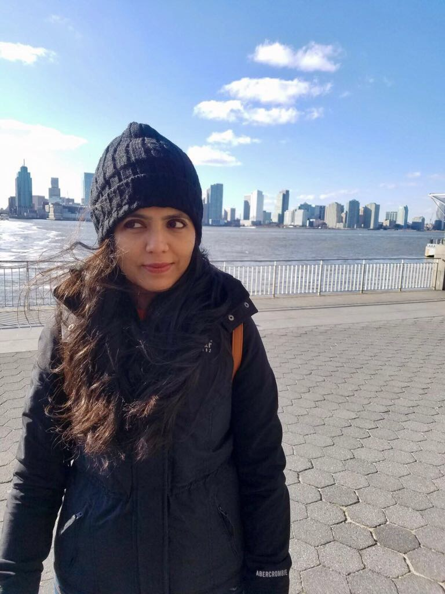

ABOUT ME:



Hello global citizens! My name is Nivedita Nagar (also known as Nivi) and I graduated
with a Psychology degree and now I'm currently enrolled in Georgia Institue of Technology's coding bootcamp.
I decided to switch careers for financial stability. I chose to pursue software development because I've always found this field intriguing. You get the opportunity to be creative and see an idea come alive.
It is like solving a puzzle and I enjoy that challenge even though it can get very frustrating at times.
So for the next three months I will have to eat, breathe, walk, and talk coding. It is true what they say...you
must believe in yourself. I'm very excited to learn the world of software development and get wait for the exciting opportunities
that are ahead in my future.